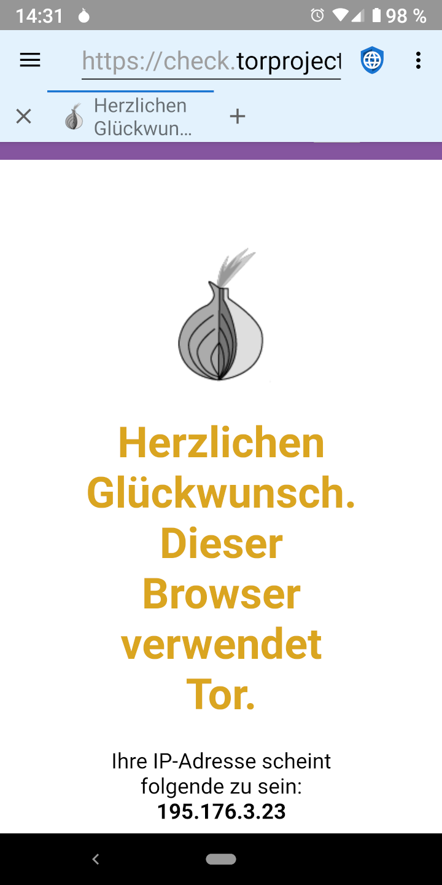

Faktoren, die in die Privatsphäre im Web eindringen wollen lassen sich hauptsächlich in zwei verschiedene Kategorien unterteilen: Neugierige Behörden mit Zugriff auf Internetprovider und Megafirmen, die Soziale und Werbenetzwerke betreiben. TOR (The Onion Router) ist nützlich, wenn es auf den Schutz der Privatsphäre vor neugierigen Behörden ankommt, aber nicht bei den Megafirmen.
Oft spähen neugierige Behörden die Bürger aus, um Fehlverhalten und Menschenrechtsaktivitäten zu bestrafen. Üblicherweise betreiben sie entweder die Internetprovider selber oder sie können die Provider dazu zwingen, Informationen über jede besuchte IP-Adresse und die zugehörigen Benutzer herauszugeben. TOR wurde entwickelt, um diese Eingriffe in die Privatsphäre zu bekämpfen, indem es die Daten verschlüsselt, die ein Nutzer sendet und sie durch viele verschiedene Server schleust, bevor sie die Zieladresse erreichen. Das bedeutet, dass kein individueller Internetprovider, Server oder Website sowohl die IP-Adresse des Nutzers als auch die IP-Adresse des letztendlich besuchten Webservers erfährt. Neugierige Behörden und die von ihnen kontrollierten Internetprovider können nur vermuten, welche Webserver ein Benutzer besucht, da sie letztendlich nur sehen, dass er TOR benutzt. In einigen Teilen der Welt könnte das Benutzen von TOR als illegale Aktivität ausgelegt werden ("wenn Du nichts zu verstecken hättest, würdest Du nicht Deinen Traffic vor uns verstecken") und Benutzer könnten bestraft werden, da die Regierung vermutet, sie würden etwas Untersagtes tun. Also kann TOR hilfreich sein, ist jedoch kein Allheilmittel.
Wenn ein Benutzer sich mit einem Webserver verbindet, kann der Webserver seine IP-Adresse sehen. Obwohl es keine ausgereifte Methode ist, können IP-Adressen in physische Adressen umgewandelt werden - mit erstaunlicher Genauigkeit. Kleine Webserver nutzen normalerweise die IP-Adresse, um festzulegen, woher der Benutzer die Seite besucht. TOR ist eine gute Lösung, wenn man seinen Standort vor diesen Servern verstecken möchte. Große Megafirmen, die Soziale Netzwerke und Werbenetzwerke betreiben nutzen jedoch richtige Profile an Informationen, um Benutzer über ihre Geräte und IP-Adressen hinaus zu tracken. Diese Profile nutzen verschiedene Möglichkeiten an Techniken um Benutzer ausfindig zu machen, inklusive JavaScript, Cookies, Tracking-IDs und ein "Browser-Fingerabdruck" (fingerprinting). Weil die große Mehrheit der Websites im Internet eine Werbung entweder von den großen Werbenetzwerken oder von eingebetteten Social-Media-Buttons mit ihrem zugewiesenen JavaScript lädt, haben diese großen Megafirmen Profile von so gut wie jedem Internetnutzer angefertigt und verfolgen ihre Aktivitäten über zueinander unabhängige Seiten.
Sie verfolgen jede besuchte Seite, alles online Gekaufte, jede für Einkäufe genutzte Kreditkarte, jede Adresse, an die Waren verschickt werden und die GPS-Metadaten von jedem ins Internet hochgeladene Foto. Sie fertigen Profile an von Alter, Geschlecht, Beziehungsstatus, Adresse, politischen Ansichten, religiösen Ansichten, familiären Zuständen, Anzahl der Haustiere und allem anderen was sie über einen Nutzer herausfinden können. Sie kaufen sogar ganze Datenbanken mit Informationen über Kreditkartennutzungen in Geschäften auf, damit sie Offline-Einkaufsverhalten von Nutzern in ihren Profilen nachverfolgen können. Weil sie bereits weitaus genauere Adressinformationen über einen Nutzer haben als eine IP-Adresse aussagt, bietet TOR keinen echten Schutz der Privatsphäre gegen Megafirmen.
Der einzige und beste Schutz der Privatsphäre gegen Megafirmen ist es, mit deaktivieren JavaScript durchs Web zu surfen, gefolgt von geblockten Werbenetzwerken, deaktivieren Cookies und DOM-Speicher und das Benutzen eines Browsers, der schwierig zu "fingerprinten" ist.
Neben den Einschränkungen kann TOR in bestimmten Situationen hilfreich sein. Das TOR Project hat eine App für Android namens Orbot, die auf F-Droid verfügbar ist und überall sonst wo Privacy Browser angeboten wird. Privacy Browser hat eine Option um Orbot als Proxy zu benutzen. Wenn diese aktiviert wird, hat Privacy Browser einen hellblauen Hintergrund bei der Adresszeile statt dem standardmäßigen Hellgrau. Wenn Privacy Browsers Orbot-Proxy-Einstellung aktiviert ist, wird das Internet ausschließlich funktionieren, solange Orbot ausgeführt und mit dem TOR-Netzwerk verbunden wird. Weil die Daten durch verschiedene Anlaufstellen geleitet werden ist das Nutzen von TOR oft weitaus langsamer als das direkte Verbinden mit dem Internet.
